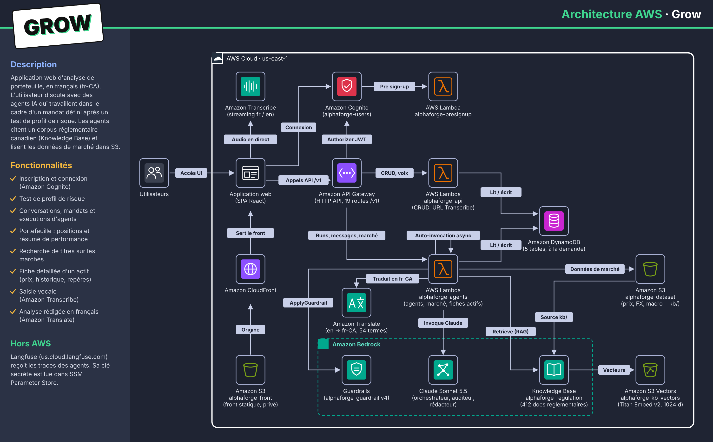

Une plateforme agentique et explicable pour simuler l'impact d'une idée d'investissement sur un portefeuille fictif, et des mesures qui ont guidé chaque optimisation.
Seuls trois composants sont des agents d'IA ; le reste est du code déterministe ou des services AWS.
| Composant | Nature | LLM | Responsabilité |
|---|---|---|---|
| agent-orchestrator | Agent IA | Oui | Comprendre la demande, poser les questions, proposer le mandat ; corrige au besoin une traduction signalée par les contrôles |
| agent-auditor | Agent IA | Oui | Pour chaque règle en alerte, choisit l'extrait réglementaire qui la justifie parmi ceux que le code a retrouvés |
| agent-writer | Agent IA | Oui | Rédige l'explication en 4 sections écrites en parallèle à partir du registre de preuves (chaque calcul EV-nn, chaque citation KB-nn) ; deux sections démarrent pendant l'auditeur. N'écrit aucun chiffre |
| module-engine | Code Python | Non | Scénarios, mesures de risque, tests de résistance et constructeur de portefeuille moyenne-variance (mode build) ; inscrit chaque résultat au registre |
| module-rules | Code Python | Non | 10 contrôles de prudence (R1–R10, page 9) ; verdict réussi, alerte ou échec |
| module-verifier | Code Python | Non | Contrôle chiffres, emplacements et formulations, en anglais comme en français ; masque ce qui n'est pas vérifiable |
| Bedrock Guardrails | Service AWS | Non | Bloquer ordres, promesses de rendement, conseils personnalisés, données sensibles |
| Knowledge Base | Service AWS | Non | Retrouver les passages réglementaires selon juridiction et sujets |
| Amazon Translate | Service AWS | Non | Traduire la restitution en fr-CA, section par section, avec un glossaire financier de 54 termes ; les phrases fixes viennent d'une table déjà traduite |
srv-agent-runtime) et dépendent du même chantier : owner_agent nomme ce chantier, pas la nature du composant. Les rôles IAM (api, agents, presignup) fixent des permissions AWS, sans lien avec un modèle.build, lance le calcul et adopte le portefeuille construit, sans appel au modèle de conversation.
Figure 1. Architecture AWS de Grow dans us-east-1. CloudFront sert le frontend depuis S3, Cognito fournit l'identité JWT, API Gateway route vers deux Lambdas. La Lambda agents lit le dataset S3, appelle Bedrock et Amazon Translate, et écrit dans DynamoDB. Langfuse, hors AWS, reçoit les traces de développement.
pre sign-up confirme le compte à l'inscription ; API Gateway vérifie le JWT sur les 19 routes /v1.alphaforge-api gère profil, conversations, portefeuilles, mandats et l'URL signée de Transcribe, avec DynamoDB.alphaforge-agents calcule les scénarios (dataset S3), répond en partie synchrone, puis s'invoque elle-même en asynchrone pour l'audit, la rédaction et la traduction, hors du délai de 30 s d'API Gateway.grow-finance-en-fr.alphaforge- pour ne pas casser la démonstration en ligne. Le produit présenté à l'utilisateur s'appelle Grow.| Besoin | Service | Raison du choix | Limite assumée |
|---|---|---|---|
| Livrer l'interface | S3 + CloudFront | Application React privée, sans serveur à exploiter | Pas de rendu serveur |
| Identifier | Cognito | Pas de mots de passe à gérer ; JWT natif ; confirmation à l'inscription par une Lambda | Courriel non vérifié (démo) |
| Router et protéger | API Gateway HTTP | Authorizer JWT sur les 19 routes | Délai de 30 s |
| Chemins court et long | Lambda ×3 | API 256 Mo / 10 s ; agents 2 048 Mo / 180 s, auto-invocation asynchrone ; pre sign-up | Démarrage à froid mesuré : 5 s |
| Conserver l'état | DynamoDB | 5 tables à la demande : sessions, mandats et runs accédés par clé | Pas de SQL |
| Données de marché | S3 + Parquet | Jeu versionné (2026-11-15), prix par titre et regroupés par année (prices_all) | Pas de requêtes ad hoc |
| Modèles | Bedrock | Claude Sonnet 5.5 : 25 à 40 % plus rapide par jeton qu'Opus 5.5 sur nos traces ; Guardrails et KB dans le même service | Coût et durée par appel |
| Garde-fous | Bedrock Guardrails | Filtre indépendant des prompts, en entrée et en sortie | Faux positifs (ci-dessous) |
| Index vectoriel | S3 Vectors | Pas de cluster permanent, créé par Terraform | Recherche moins générale |
| Traduction | Amazon Translate | Environ 10 fois plus rapide qu'un appel au modèle (essai de Kiro dans le compte) ; glossaire personnalisé | Ne suit pas de consignes : contrôles en code |
| Saisie vocale | Transcribe | Audio envoyé du navigateur, sans passer par Lambda | Dépend du micro |
| Observer | CloudWatch, Langfuse | Événements tool.call et agent.usage ; traces OpenTelemetry des agents | Langfuse hors AWS, optionnel |
La Knowledge Base contient 13 textes publics, en anglais, issus de régulateurs canadiens (fédéral, Québec, Ontario, Saskatchewan) et d'un courtier : connaissance du client, convenance d'un placement, cryptoactifs, fonds « ESG », protection des titres professionnels, courtage sans conseil. Elle appuie chaque règle en alerte par un extrait cité tel quel. Chaque texte est découpé en passages de 300 tokens (environ 220 mots), qui se chevauchent de 20 % : une recherche renvoie un extrait ciblé, sans perdre le contexte entre deux passages.
Sigles : CSA, Autorités canadiennes en valeurs mobilières · CIRO, autorégulateur des courtiers · AMF (Québec), FSRA (Ontario), FCAA (Saskatchewan) · NBDB, courtier en ligne de la Banque Nationale · 31-103, 31-368 : numéros d'instruments · KB-nn : citation numérotée du registre.
| Étape | Constat et décision |
|---|---|
| Corpus par section | 824 objets, 412 documents, 1 335 vecteurs, 0 échec ; métadonnées ajoutées : section, titre, pages, citable, statut. |
| Moins de bruit | Plus de recherche pour R7 sans cryptoactif, R8 sans préférence ESG ni R10 : 9 → 7 recherches, 14,6 s → 10 s ; 13/16 → 11/16 verdicts cités. |
| Longueur des extraits | À 700 caractères, 29 extraits sur 31 s'arrêtaient en pleine phrase ; à 1 200 coupés à une fin de phrase, 30/31 étaient propres ; plafond actuel 2 400, le maximum observé d'un passage. |
Nos requêtes prenaient trop de temps. Plutôt que deviner, nous avons instrumenté les agents et lu les traces : chaque décision d'optimisation des pages suivantes part d'une mesure.
backend/agents/telemetry.py).chain (tour de chat, run), guardrail, retriever (recherche KB), evaluator (règles, vérificateur), regroupés par session et par utilisateur fictif.scripts/export_langfuse.py télécharge les N dernières requêtes avec toutes leurs observations (200 requêtes, 4 314 observations) ; les constats sont consignés dans profiling/.| Constat | Cause trouvée dans la trace |
|---|---|
| Mandats refusés | L'agent devinait des noms d'industrie absents du jeu (« Oil & Gas Drilling ») : le profil ne stockait qu'une catégorie large en français. |
| Rédacteur lent | Un appel unique qui écrit 4 sections l'une après l'autre, en série après l'auditeur. |
| Français lent | Deux appels de traduction au modèle, en série, environ 16 s ; 70 % des phrases traduites étaient identiques d'un run à l'autre. |
| Moteur lent | 8,6 s à chaud et 34 à 38 s à froid avant la première étape tracée : environ 400 lectures S3, une par titre candidat. |
| Traces incomplètes | Les recherches KB lancées dans des threads devenaient des traces orphelines : contexte OpenTelemetry non transmis. |
Kiro, l'assistant de développement d'AWS, a lu nos constats et testé des solutions directement dans le compte (appels en lecture, sans créer de ressource). Chaque proposition retenue a été codée dans une branche isolée, testée, puis mesurée de nouveau.
| Constat mesuré | Conseil | Changement | Effet |
|---|---|---|---|
| POST /runs en erreur 503 à froid (API Gateway, 30 s) | Kiro : les ~400 lectures S3 séquentielles de l'optimiseur dépassent 30 s sur une Lambda froide | Lectures parallèles, puis lecture groupée de prices_all (un Parquet par année) dans S3 | Moteur 34–38 s → 4,2 s |
| Traduction LLM : 16 s en série | Kiro : Amazon Translate, essayé dans le compte, environ 10× plus rapide ; emplacements protégés en HTML ; terminologie personnalisée | Translate (TranslateDocument, HTML), glossaire de 54 termes, table de phrases fixes, correction par le modèle seulement si un contrôle échoue | Déployé ; attendu ≈ 1 s après la dernière section, pas encore mesuré |
| Démarrage à froid : 5,0 s (CloudWatch) | Garder des conteneurs chauds : provisioned concurrency ou préchauffage | Non appliqué : priorité à la soumission | Reste 5 s au premier appel |
| Mandats refusés (14/23) | Ne plus faire deviner : donner au front et à l'agent les noms exacts du jeu | Recherche sur les 101 industries, bilingue ; correction des noms presque exacts | 0/3 refus après |
| Rédacteur : 14 s | Paralléliser sans réduire la réflexion | 4 appels parallèles, 2 lancés pendant l'auditeur | 5,5–11,6 s après l'auditeur |
| Débit du modèle | Comparer Opus 5.5 et Sonnet 5.5 sur les mêmes traces | Les 3 agents sur Sonnet 5.5 | 87 → 123 jetons/s |
TranslateText ; le code utilise TranslateDocument, seul à accepter le HTML qui protège les emplacements {EV-nn}. Les filets de sécurité restent en code : contrôle des emplacements, des formulations interdites et des chiffres, puis repli sur l'anglais.| Mesure (traces Langfuse et CloudWatch) | Avant | Après le 16 novembre |
|---|---|---|
| Propositions de mandat refusées | 14 sur 23 | 0 sur 3 |
| Tour de chat qui propose un mandat | 20 à 31 s | 12 à 21 s |
| Calcul du portefeuille (partie synchrone) | 8,6 s ; 34 s à froid | 4,2 s |
| Récit en anglais (arrière-plan) | 20 à 24 s | 12,5 s |
| Récit en français (arrière-plan) | 33 à 36 s | Translate déployé, à mesurer |
Échantillon après déploiement réduit (4 tours, 4 analyses) : ce sont des tendances. Défaut repéré au passage : le rédacteur écrit parfois sa section deux fois (texte libre, puis sortie structurée), soit 3 à 4 s de plus ; correction identifiée, non faite.
Yahoo Finance (yfinance), Banque du Canada et FRED ; jeu versionné 2026-11-15 : 582 actifs (476 actions, 102 FNB, 3 cryptos, l'indice ^GSPC comme repère non investissable), historique depuis 2015, 101 industries proposées au profil. Prix ajustés des dividendes et fractionnements ; volatilité annualisée avec √252 (√365 pour les cryptos) ; biais du survivant signalé, sans donnée inventée.
explanation.steps et explanation.checks viennent des appels d'outils réellement exécutés.tool.call et agent.usage, jamais le texte des échanges ; le contexte OpenTelemetry est copié dans chaque thread, pour que les sections du rédacteur et les recherches KB restent rattachées à leur run.| Dossier | Contenu |
|---|---|
contract/knowledge-graph.yaml | Contrat d'API et d'architecture (0.4.20) : services, routes, schémas, agents, outils |
backend/, frontend/, infra/ | Lambdas (API, agents), interface React, Terraform |
docs/ | Schéma et dossier d'architecture, one pager ; for_KB/ (corpus), for_building/ (documentation technique, suivi des chantiers, Guardrail) |
profiling/, scripts/ | Profilage de la latence (constats, avant et après) ; export Langfuse, liste des industries, comptes de démo |
| Élément | Configuration |
|---|---|
| Région et IaC | us-east-1 ; Terraform ≥ 1.5, provider AWS ~> 6.0 |
| Lambdas | Python 3.12 arm64 ; API 256 Mo / 10 s ; agents 2 048 Mo / 180 s ; pre sign-up 128 Mo |
| Modèle | global.anthropic.claude-sonnet-5-5 (orchestrateur, auditeur, rédacteur) |
| Traduction | Amazon Translate en → fr-CA, terminologie grow-finance-en-fr (54 termes) |
| KB et Guardrail | S3 Vectors, Titan Text Embeddings V2 (1 024 dimensions) ; Guardrail v4 en entrée et en sortie |
| Journaux et traces | CloudWatch, rétention 14 jours ; Langfuse optionnel, hors AWS, fail-open |
| Règle | Ce qu'elle vérifie | Appui |
|---|---|---|
| R1 | Le risque retenu est le plus bas entre tolérance et capacité | Avis 31-368 |
| R2 | La pire baisse simulée respecte la perte maximale acceptable | Règl. 31-103, art. 13.2 |
| R3 | L'impact est mesuré sur tout le portefeuille, pas sur le titre seul | Avis 31-368 |
| R4 | Comparaison par catégorie d'actifs, sur demande seulement | Principe d'équipe |
| R5 | Aucun symbole de titre visible sans clic | Règle d'équipe |
| R6 | Poids d'un titre : alerte au-delà de 10 %, échec au-delà de 20 % | Hypothèse d'équipe |
| R7 | Crypto : avertissement et plafond selon le profil | Avis 21-329, 21-332 |
| R8 | « ESG » affiché seulement si une source le montre | Avis 81-334 |
| R9 | Mentions propres à la province du client | AMF, FSRA, FCAA |
| R10 | Aucune donnée macro utilisée avant sa publication | Énoncé du datathon |